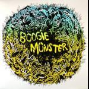
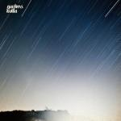
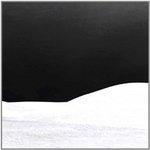

Music Reviews
-
Digitalism I Love You, Dude
German electro duo Digitalism return with the follow-up to 2007's Idealism.
Craig Stevens is missing the Zdarlight... -

Boogie Monster Zechimechi
Some bands sound like a broken robot found a working microphone. Some bands would sound really good if they could just find a working microphone. Boogie Monster is definitely in the latter category. A band this good deserves better recording equipment.
wants to ditch the CD and spend the money at a Boogie Monster show... instead -

Sons and Daughters Mirror Mirror
Three years after This Gift proved to be a commercial disappointment, Glaswegian band Sons and Daughters reveal a new, rather grim(m) sound on their latest album.
Mark Davison is frightened... -

Gardens & Villa Gardens & Villa
The lackadaisical Californians emote a synth-heavy debut that incessantly clashes with airy sun-dappled melodies, both in word and song.
Juan Edgardo Rodríguez is a tad disoriented... -

YACHT Shangri-La
The second record by the American synthpop twosome, entitled Shangri-La, does exactly what it says on the tin, but only in the sense that when I say 'tin' I mean 'CD case' and when I says 'does' I mean 'expands laterally on and attempts to convince of the existential nature of '... but that was self-evident, right?
Joe Iliff is an uninspired nihilist; that's also his favourite joke; he's a funny guy. -
Brian Eno Drums Between the Bells
There’s probably only one musician who could gracefully meld poetry with ambient and electronic music without losing important aspects of either, and as expected, it’s the indomitable Brian Eno who has managed it.
Matt Montgomery reviews... -
Marvin Gaye What's Going On (40th Anniversary Edition)
Few albums are deserving of the overused description 'timeless', but Marvin Gaye's 1971 masterpiece is undoubtedly one of them. To mark its 40th anniversary, Universal have released a special box-set edition.
Paul Fowler shamelessly enthuses... -

White Hills H-p1
White Hills have crafted another psychedelic barrage of stoner riffs and synth swirls - it's their angriest record yet, as well as their most refined.
Stephen Wragg reviews... -

Necro Deathmort Music of Bleak Origin
The London-based harbingers of doom offer a 48 minute tour of the abyss
Sam Redlark searches in vain for an oasis... -
Mooncake Zaris/Cast the Route
Remember the days when Mogwai seemed like the future of music? Moscow-based Mooncake certainly do, and they hope that a little unoriginality on their part won't get in the way of the fun.
Mark Davison parties like it's 1999...